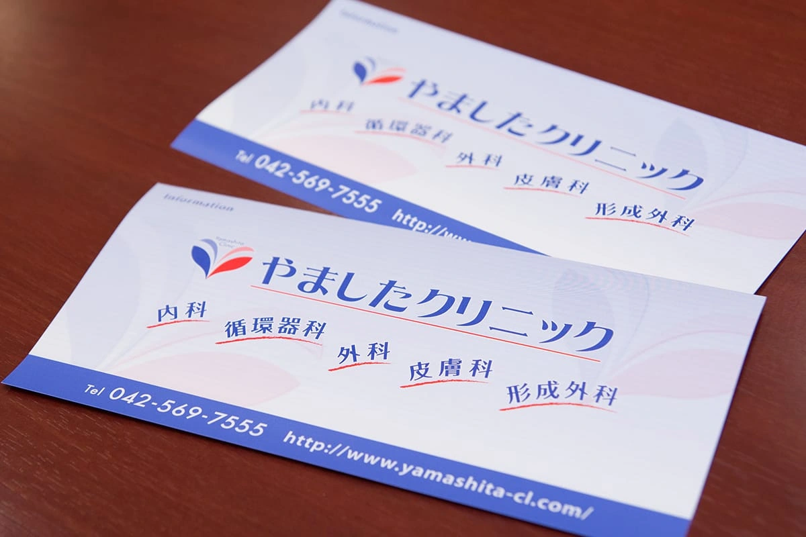

西武拝島線「西武立川」駅 徒歩5分
JA東京みどり3F、西武立川駅入口バス停前。駐車場10台あり。
所在地と交通手段
| 住所 | 〒190-0033 東京都 立川市 一番町2-36-5-3F |
|---|---|
| 電話 | 042-569-7555 |
| 最寄駅 | 西武拝島線「西武立川」駅徒歩5分。 |
| 最寄バス停 | JA東京みどり3F、西武立川駅入口バス停前。 |
| 近くの駐車場 | 駐車場10台あり。 |
アクセスマップ
西武立川駅からの道案内
西武拝島線「西武立川」駅徒歩5分。JA東京みどり3F、西武立川駅入口バス停前。
診療時間
| 月 | 火 | 水 | 木 | 金 | 土 | 日 | 祝 | |
|---|---|---|---|---|---|---|---|---|
| 9:00～12:00 | ● | ● | ● | ／ | ● | ● | ／ | ／ |
| 15:00～18:00 | ● | ● | ● | ／ | ● | ／ | ／ | ／ |
※受付は30分前から行っております。予約制ではありません。
※当院受診時、高校生までは保護者同伴でご来院下さい。当院での内科診察は高校生からとなります。
※清水先生（甲状腺専門外来）については完全予約制です。ご予約はお電話にてお問い合せください。
甲状腺外来の診察時間は、午前9:00～12:00 午後14:30～17:00となっております。
来院に必要なもの

初診の方・月初めの受診の方は、マイナ保険証または資格確認書をお持ちください。再診の方は診察券を忘れずにお持ちください。